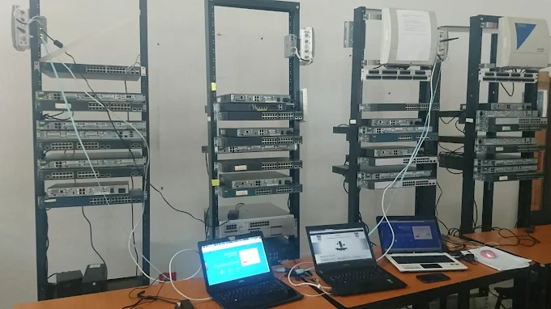
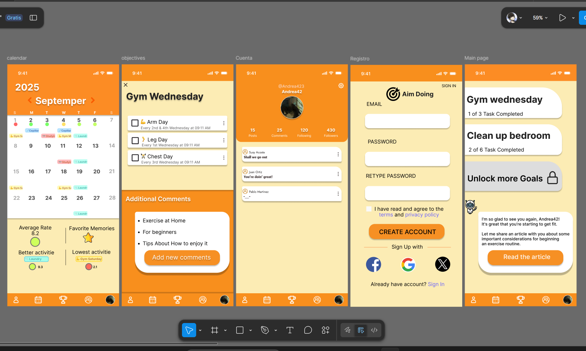
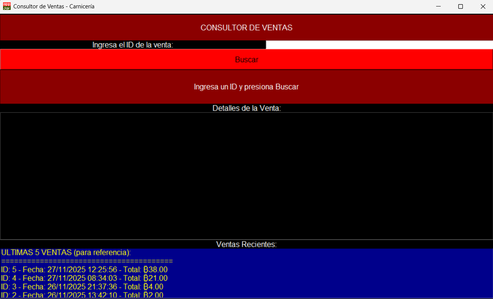
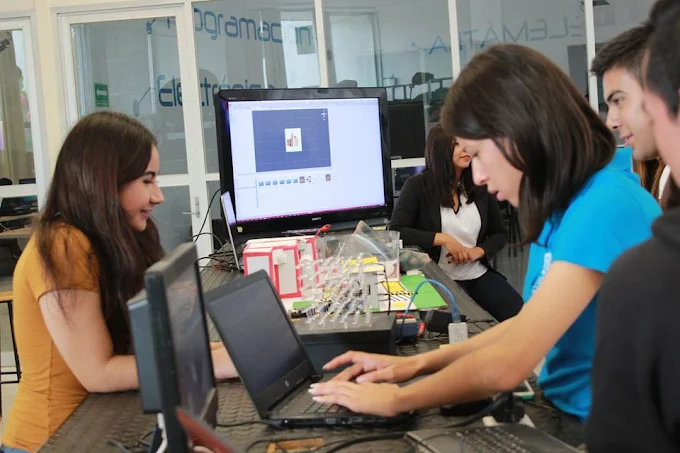
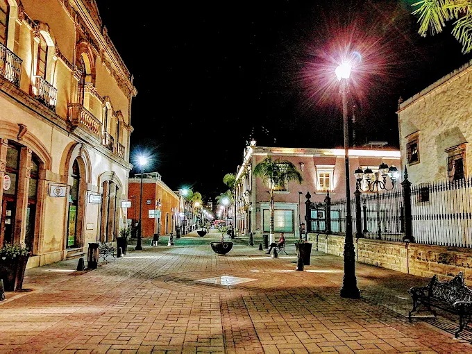

Cisco Network Routing
Router and switch configuration and interconnection: Remote access via SSH, access protocols (ACL),
VLANs and setting up HTML servers with Ubuntu Server.
Source: www.docs.google.com...

Figma mobile prototype prototype
Creation of an app prototype that includes a monochromatic color palette based on color psychology, visual hierarchy, fluid animations, continuous and comfortable app flow,
language in accordance with requirements and ethical considerations.
Source: www.figma.com...

Point of Sale in Python
Point of sale with interactive visual elements, which manages product sales, provides receipts with a purchase summary,
has the ability to replenish inventory, is programmed to avoid logical errors, and has a database where the information is stored (MySQL).
Source: GitHub

Hi, I'm Axel Abarca
Software Student at UNIPOLI

About me
I am a responsible, optimistic, yet grounded person. I am highly motivated to improve and grow professionally, and I enjoy finding ways to optimize and automate processes at my workplace.
I am currently studying Information Technology and Digital Innovation, and I am looking to establish myself as a full-stack multi-platform developer.
Information
Age: 21
Gender: Male
Country: México
City: Durango
I hope you find this page pleasing to your eye.

Social Media